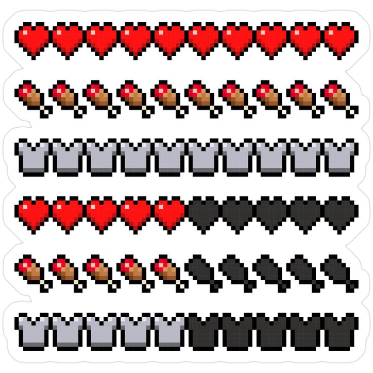

Ten Things You MUST Do as a Beginner in Minecraft
a short blog post on how to start minecraft as a complete beginner.
Published on: January 19, 2026
Minecraft is one of the most popular games in the world, and it’s easy to see why. The world is yours to explore, build, and survive in—no rules, no limits, just endless creativity. But if you’re completely new to Minecraft, the game can feel overwhelming at first. Don’t worry! Here are ten essential things you MUST do as a beginner to get started the right way.
1. Punch Trees and Gather Wood
The first thing you should do is punch trees. Wood is your most basic resource and is needed for almost everything. Collect at least 10–30 wood blocks so you can start crafting tools.
2. Craft Basic Tools
Once you have wood, make a Crafting Table and start crafting basic tools like: • Wooden Pickaxe • Wooden Axe • Wooden Sword Tools make everything easier, and they’re your first step to survival.
Build a Simple Shelter
Before night falls, build a small shelter to protect yourself from monsters. Even a tiny dirt or wood house will do. The goal is to stay safe until morning. PS: A dirt home is very common among beginners! It might not look the best, but it will definitely keep you safe
4. Make Torches
Dark areas are dangerous in Minecraft. Craft torches using coal (or charcoal) and sticks. Place them inside your shelter and around your base to prevent monsters from spawning.
5. Find Food
You need food to stay alive. Hunt animals like cows, pigs, or chickens, or gather apples and berries. Cook meat in a furnace to make it more filling.
6. Learn to Mine
Mining is a core part of Minecraft. Start digging down carefully and collect stone, coal, and iron. Stone tools are much stronger than wooden ones, so upgrading is important.
7. Upgrade Your Tools
Once you have stone and iron, upgrade your tools to: • Stone Pickaxe • Stone Sword • Iron Pickaxe Better tools make mining faster and keep you safer.
8. Explore the Nearby Area
Explore your surroundings to find: • Villages • Caves • Rivers and forests • Resources like sugar cane and clay These discoveries will help you expand and survive.
9. Set a Spawn Point
Use a bed to set your spawn point. If you die, you’ll respawn at your bed instead of starting over from scratch. It’s a game-changer.
10. Start a Small Farm
Growing food is the key to long-term survival. Plant wheat, carrots, potatoes, or melons near water. Farming ensures you always have food available.
Final Tips
Minecraft is a game of exploration and creativity. Don’t stress about doing everything perfectly. Start small, learn the basics, and build your world one block at a time.
References
- Minecraft Wiki. (n.d.).Survival guide. Fandom. https://minecraft.fandom.com/wiki/Survival_guide